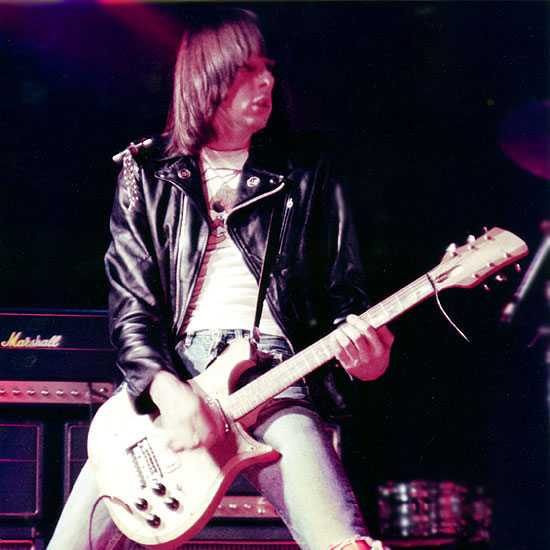
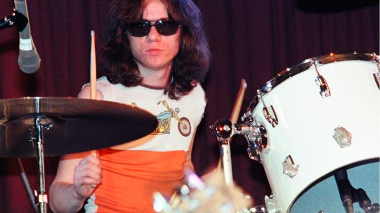
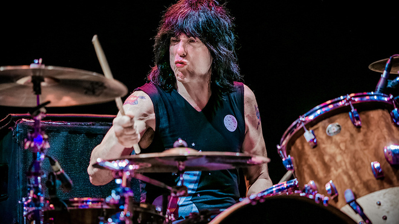
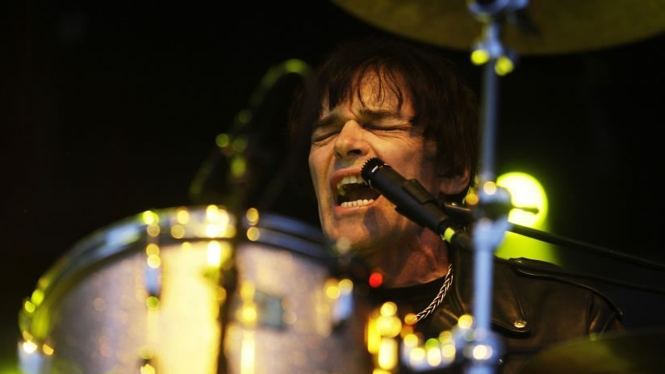

The punk-rock kings
Uno de los nombres esenciales de la música de los 70, impulsores del punk y animadores fundamentales del rock avivando la substancia del rock’n’roll más tradicional con una potente amalgama de sonidos pop, surf, bubblegum y rock, recreados por tres acordes y pegadizas melodías de cortísima duración, los Ramones se convirtieron en uno de los grupos más influyentes de todos los tiempos.
Componentes fundadores

Joey
Cantante. El larguirucho que se plantaba en el escenario y de ahí no se movía. El tipo que fue hippie y después patentó el uniforme de campera de cuero y jeans rotos. Su forma de cantar era particular debido a que él nunca recibió ningún tipo de entrenamiento o clases. En una era de competencia vocal, cantar como un profesional fue sin duda una norma para la mayoría de las bandas de rock. Sus grietas, gruñidos, canto y su voz juvenil hizo que sea considerada una de las voces más reconocidas de punk rock.
Fallecio en 2001.
Dee Dee
Bajista y compositor. El chico malo. Siempre fue el más creativo de la banda de Queens, también el más infeliz. Fue chapero, aprendiz de atracador, vendedor y consumidor de heroína, cómplice de un robo a mano armada… y un genio poético que se dirigía hacia una temprana sepultura pero que se salvó gracias al rock ‘n’ roll”. Consideraba que el grupo era su unica familia.
Fallecio en 2002.


Johnny
Guitarrista. Principalmente se caracterizó por su particular forma de tocar, siempre agachado y rara vez tocando solos largos o difíciles. Hacía subidas y bajadas con la guitarra y tenía una habilidad para moverse y tocar muy rápido al mismo tiempo. Mantuvo una relación distante y conflictiva con Joey, sobre todo desde que le robo la novia.
Fallecio en 2004.
Los baterias
Tommy

1974-78
Marky

1978-83 y 1987-96
Richie

1983-87
Discografía

Lamentablemente ya no podremos disfrutar de los Ramones en directo nunca más. Pero nos dejaron un buen puñado de discos cargados de himnos generacionales.
Su influencia también pervive en grupos de diferentes epocas: Green Day, Shonen Knife, Nikis, The Strokes, Foo Fighters ...
Ramones (76)
Leave home (77)
Rocket to Russia (77)
Road to ruin (78)
End of the century (80)
Pleasant Dreams (81)
Subterranean Jungle (83)
Too Tough to Die (84)
Animal Boy (86)
Halfway to Sanity (87)
Brain Drain (89)
Mondo bizarro (92)
Acid Eaters (93)
¡Adiós amigos! (95)